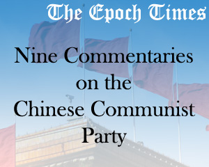

Tài liệu gốc: http://dajiyuan.com/gb/4/11/19/n722351.htm
|
 |
Trong hơn một thập kỷ kể từ khi ‘anh cả’ Liên Xô cùng hệ thống Xã hội Chủ nghĩa ở Đông Âu tan rã, Chủ nghĩa Cộng sản thế giới cũng dần dần tàn lụi. Đảng Cộng sản Trung Quốc (ĐCSTQ) chắc chắn không tránh khỏi diệt vong. Chỉ là vấn đề ‘khi nào’ mà thôi.
Tuy nhiên, trước khi sụp đổ triệt để, Đảng Cộng sản Trung Quốc đang gắng tìm mọi cách để gắn chặt vận mệnh của bản thân mình với vận mệnh của dân tộc Trung Hoa — một dân tộc với 5000 năm lịch sử — đây là nỗi bất hạnh lớn nhất của đại cộng đồng người Hoa chúng ta. Nhìn nhận và đối xử thế nào với Đảng Cộng sản, chuyển tiếp ra sao sang một xã hội mới không có Đảng, khôi phục và duy trì truyền thống của dân tộc như thế nào, tất cả những điều ấy là vấn đề trước mắt mà dân tộc Trung Hoa cần có lời giải đáp. Hơn nữa, câu trả lời ấy sẽ không chỉ quan trọng đối với đại cộng đồng người Hoa chúng ta, mà cũng mang ý nghĩa to lớn đối với nhân dân toàn thế giới.
Thời báo Đại Kỷ Nguyên chúng tôi sẽ đăng một loạt chín bài của Ban biên tập với tựa đề “Chín bài bình luận về Đảng Cộng sản”, qua đó, trước khi hòn đất cuối cùng đắp lên nấm mồ Cộng sản, chúng tôi mong muốn truyền đạt một cái nhìn cuối cùng về ĐCSTQ cũng như Chủ nghĩa Cộng sản Quốc tế, một trong những tai hoạ của người dân thế giới trong hơn một thế kỷ qua.
Trong suốt hơn 80 năm tồn tại của mình, Đảng Cộng sản Trung Quốc đã không ngừng bôi lên mọi thứ bằng vu khống, chiến tranh, lừa dối, độc tài, giết chóc và khủng bố. Bằng bạo lực, Đảng triệt phá truyền thống và tín ngưỡng, tiêu diệt quan niệm luân lý và cấu trúc xã hội. Yêu thương và hoà bình trong công chúng được Đảng thay bằng thù hận và đấu tranh. Thuận Trời thuận Đất thuận Tự nhiên được Đảng thay bằng tự cao tự đại ‘đấu trời đấu đất’. Nhân tố đạo đức xã hội cũng như các nhân tố sinh thái đã vì thế mà bị Đảng phá sạch, dẫn đến khủng hoảng trầm trọng cho dân tộc Trung Hoa cũng như nhân loại hôm nay. Tất cả đại tai nạn ấy đều do Đảng Cộng sản hoạch định, tổ chức, khống chế mà sinh ra.
Như một câu thơ cổ, “Hoa tàn hoa rụng biết làm sao”, chính quyền Cộng sản đã thấy ngày tàn của mình, và đang cầm cự mong cầu kéo dài thêm từng phút giây sống sót. Trước khi lịch sử đặt dấu chấm hết cho Đảng, chúng tôi, Thời báo Đại Kỷ Nguyên, thấy rằng đã đến lúc cần vạch trần bản chất của tổ chức tà giáo đại gian đại ác tự cổ chí kim này. Mục đích là để những người dân lương thiện vốn bị chính quyền Cộng sản bưng bít, lừa đảo và đầu độc có thể nhận rõ ra bản chất tà ác của nó, từ đó tẩy sạch ảnh hưởng độc hại về tư tưởng, bứt khỏi khống chế về tinh thần, rũ sạch gông xiềng bạo lực, và phá tan vòng ảo mộng do Đảng cưỡng chế lên bấy lâu nay.
Thời Đảng Cộng sản Trung Quốc cai trị là thời đen tối nhất và lố bịch nhất trong lịch sử Trung Quốc. Trong đó cuộc đàn áp Pháp Luân Công là tà ác nhất. Chống phá “Chân Thiện Nhẫn”, Giang Trạch Dân đã đóng chiếc đinh cuối cùng lên nắp quan tài của Đảng Cộng sản Trung Quốc. Chúng tôi trộm nghĩ rằng, nếu người dân hiểu rõ lai lịch của Đảng Cộng sản Trung Quốc thì đại tai hoạ ấy đã được ngăn chặn kịp thời. Đồng thời, mỗi cá nhân đều có thể qua Chín bài bình luận này mà tự xem xét thế giới nội tâm của mình, có đúng chăng, rằng rất nhiều bi kịch phát sinh cũng là do bản thân mình quá nhu nhược và thoả hiệp cầu toàn mà gây nên hay không.
Chúng tôi sẽ đăng Chín bài bình luận về Đảng Cộng sản như sau:
Nhìn lại lịch sử Trung Quốc trong suốt 160 năm qua, để thấy được cuộc vận động cộng sản và ĐCSTQ đã nảy sinh rồi ảnh hưởng đến dân tộc Trung Hoa như thế nào: Gần 100 triệu người chết do những nguyên nhân không tự nhiên, và hầu như toàn bộ văn hoá truyền thống Trung Hoa đã bị huỷ diệt. ĐCSTQ có phải là do nhân dân Trung Quốc lựa chọn — như nó vẫn tuyên truyền — hay đó là một thực thể ngoại lai được đưa vào Trung Quốc?
2 - Đảng cộng sản Trung Quốc xuất sinh như thế nào?
Tại sao Đảng Cộng sản Trung Quốc xuất hiện và giành chính quyền bằng bạo lực cách mạng rồi thống trị Trung Quốc? Nhân dân đã chọn đảng? Hay đó là một nhóm kéo bè kéo đảng mà thành, rồi cưỡng bức nhân dân phải thừa nhận? Đảng Cộng sản Trung Quốc đã tự đặt mình cao trên hết thảy, đè bẹp mọi thứ cản con đường của nó, và mang đến Trung Quốc biết bao đại nạn.
3 - Chính quyền bạo lực của Đảng cộng sản Trung Quốc.
Chính sách bạo chúa của Đảng Cộng sản Trung Quốc hôm nay đã tinh vi và thâm độc hơn bao giờ hết. Sự bạo tàn của Đảng Cộng sản Trung Quốc vượt xa thời Tần Thuỷ Hoàng trong lịch sử. Với thứ triết học “đấu tranh”, cộng với hàng loạt những cuộc vận động — đấu tranh giai cấp, đấu tranh đường lối, đấu tranh tư tưởng,… — Đảng Cộng sản Trung Quốc đã gây dựng nên bộ máy “bạo chính” của mình như thế nào.
4 - Đảng cộng sản, một lực lượng phản vũ trụ.
Hơn một thế kỷ qua, bóng ma tà linh cộng sản đã trở thành một thế lực chống đối tất cả, dẫn tới vô vàn bi kịch và tai ương cho nhân loại. Nó cũng đưa nền văn minh đến bờ huỷ diệt. Nó thực sự là một thế lực phản vũ trụ.
5 - Giang Trạch Dân và Đảng Cộng sản Trung Quốc lợi dụng lẫn nhau để đàn áp Pháp Luân Công.
Tại sao Pháp Luân Công, một môn tập thiền đang phổ biến ở hơn 60 quốc gia trên thế giới, gồm những người tin theo đạo lý Chân Thiện Nhẫn, lại đang bị đàn áp ở Trung Quốc chứ không phải ở bất kỳ nơi nào khác trên thế giới? Trong cuộc đàn áp dã man ấy, mối quan hệ giữa Đảng Cộng sản Trung Quốc và Giang Trạch Dân là như thế nào?
6 - Đảng Cộng sản Trung Quốc phá hoại văn hoá dân tộc.
Đảng Cộng sản Trung Quốc dốc tất cả nguồn lực của quốc gia để huỷ diệt một nền văn hoá truyền thống với chiều dày 5000 năm lịch sử của Trung Quốc. Sự huỷ diệt văn hoá truyền thống ấy là một sự huỷ diệt có tính toán, có tổ chức, có hệ thống và dựa trên bạo lực chuyên chính của nhà nước trong tay Đảng Cộng sản Trung Quốc. Kể từ ngày giành được chính quyền, Đảng Cộng sản Trung Quốc chưa hề ngừng cuộc “cách mạng” nhắm vào văn hoá truyền thống, từng bước huỷ diệt linh hồn của dân tộc.
7 - Lịch sử giết chóc của Đảng cộng sản Trung Quốc.
Lịch sử 55 năm cầm quyền của Đảng Cộng sản Trung Quốc là một lịch sử được viết bằng máu và giả dối. Những sự kiện đằng sau lịch sử đẫm máu ấy, là những câu chuyện không chỉ là vô nhân đạo, mà còn là những gì được bưng bít nên rất ít được biết. Trong thời gian cầm quyền, khoảng 60 đến 80 triệu người dân Trung Quốc vô tội đã bị giết chết, bỏ lại những gia đình tan vỡ và những thảm kịch khác trong xã hội.
8 - Bản chất tà giáo của Đảng cộng sản Trung Quốc.
Cộng sản chính là một tà giáo theo đúng nghĩa và đang làm tổn hại nhân loại. Mặc dù cộng sản không tự nhận mình là một tôn giáo, nhưng nó chính là một tà giáo với đầy đủ mọi khía cạnh tà ác nhất. Ngay từ ngày đầu kiến lập, nó đã tự tôn thờ chủ nghĩa Mác-xít như một thứ triết thuyết tuyệt đối. Nó xúi bẩy con người vắt kiệt nguồn lực và sinh mạng để chiến đấu cho “thiên đường cộng sản” mà nó vẽ ra.
9 - Bản tính lưu manh của Đảng cộng sản Trung Quốc.
Một trong những gì khủng khiếp nhất của ĐCSTQ là nó đang gắng hết sức phá hoại nền tảng đạo đức của toàn dân tộc, ngõ hầu biến dân tộc Trung Hoa trở thành những con người bại hoại ở mọi tầng lớp xã hội, bởi vì môi trường thích hợp cho sự phát triển của ĐCSTQ là môi trường gồm những kẻ lưu manh. Cần phải chỉ rõ ra rằng ĐCSTQ luôn mang trong nó lối hành xử vô lại và đó chính là một bản tính của nó.
Ban biên tập Thời báo Đại Kỷ Nguyên DAJIYUAN.COM.
Ngày 18 tháng 11 năm 2004
Copyright © 2004 DAJIYUAN.COM, thời báo Đại Kỷ Nguyên